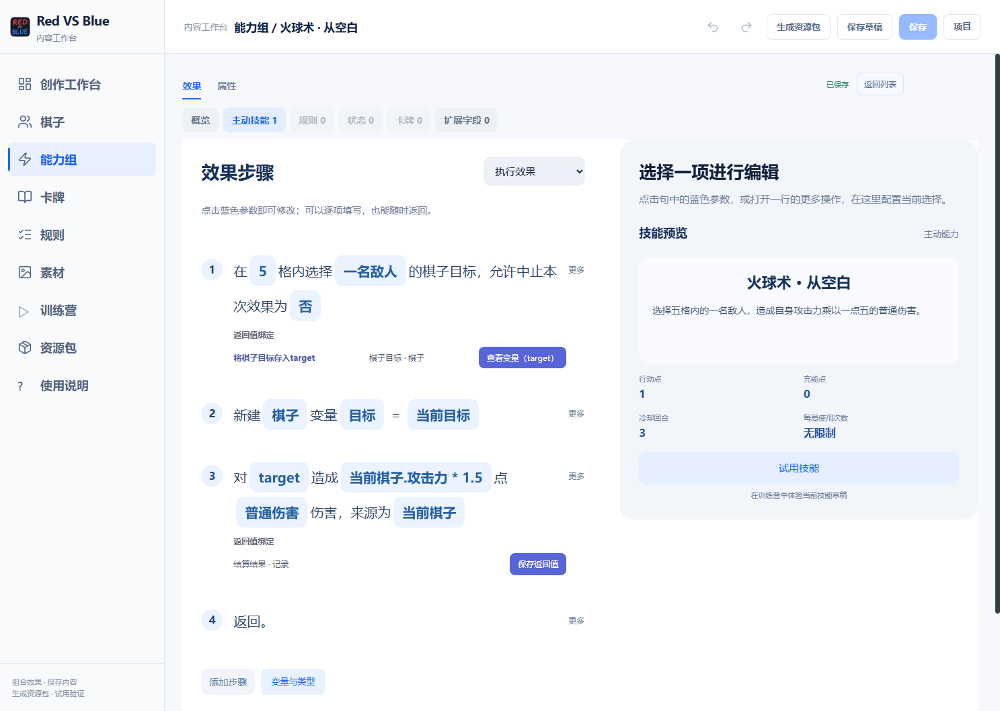
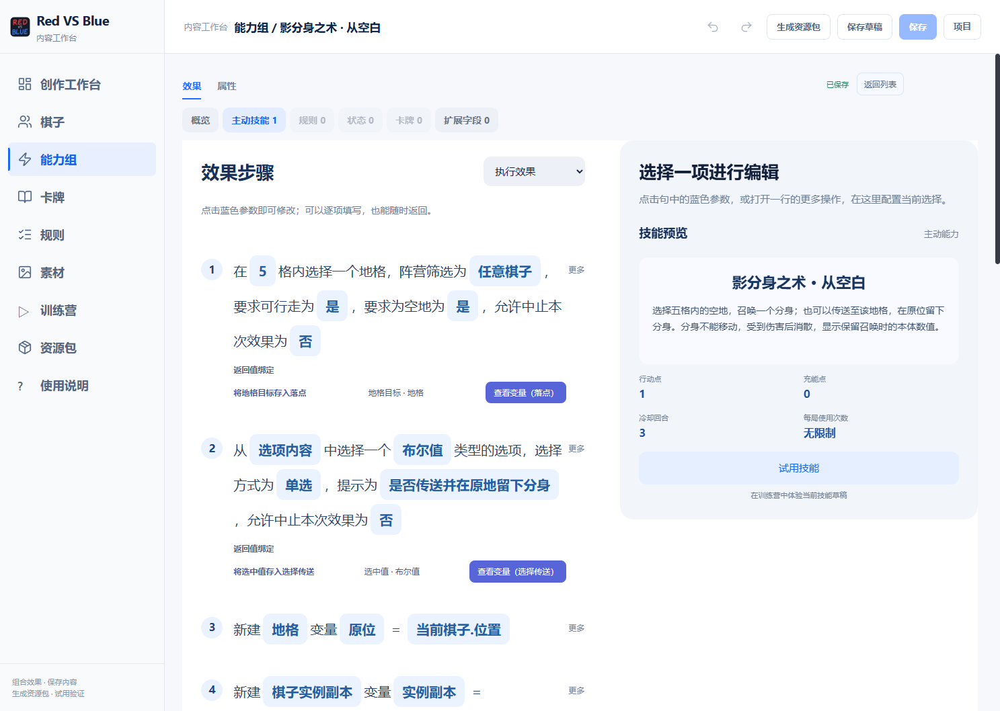
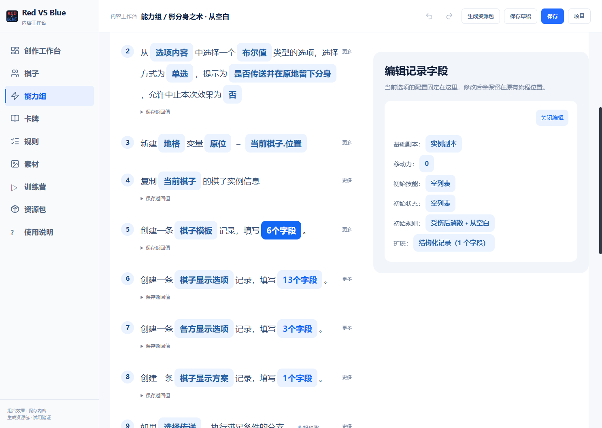
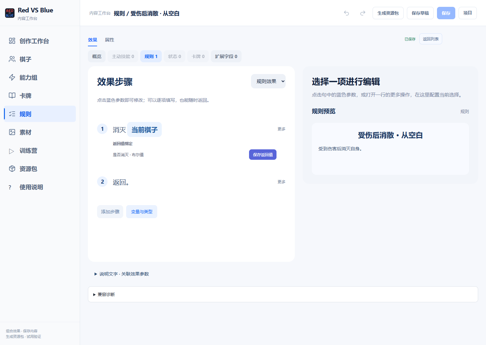
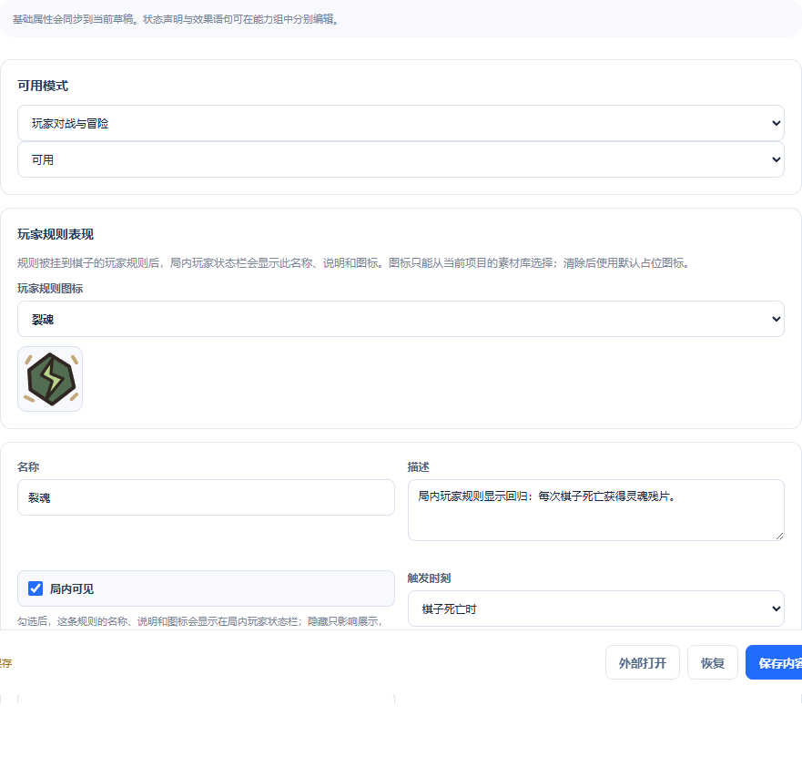
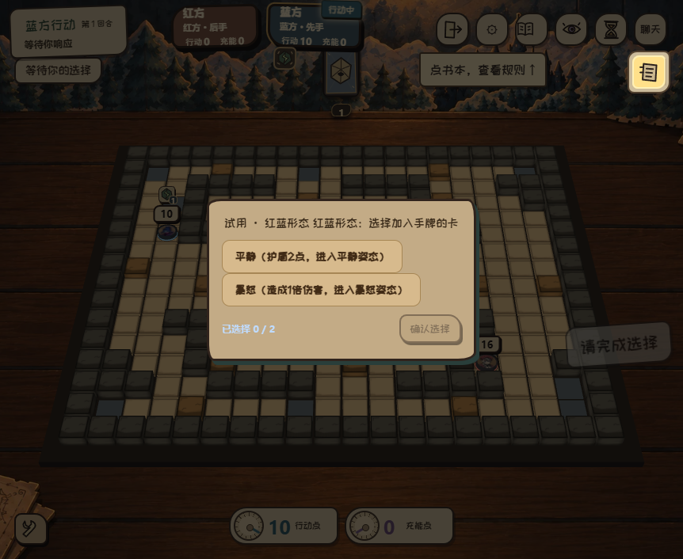
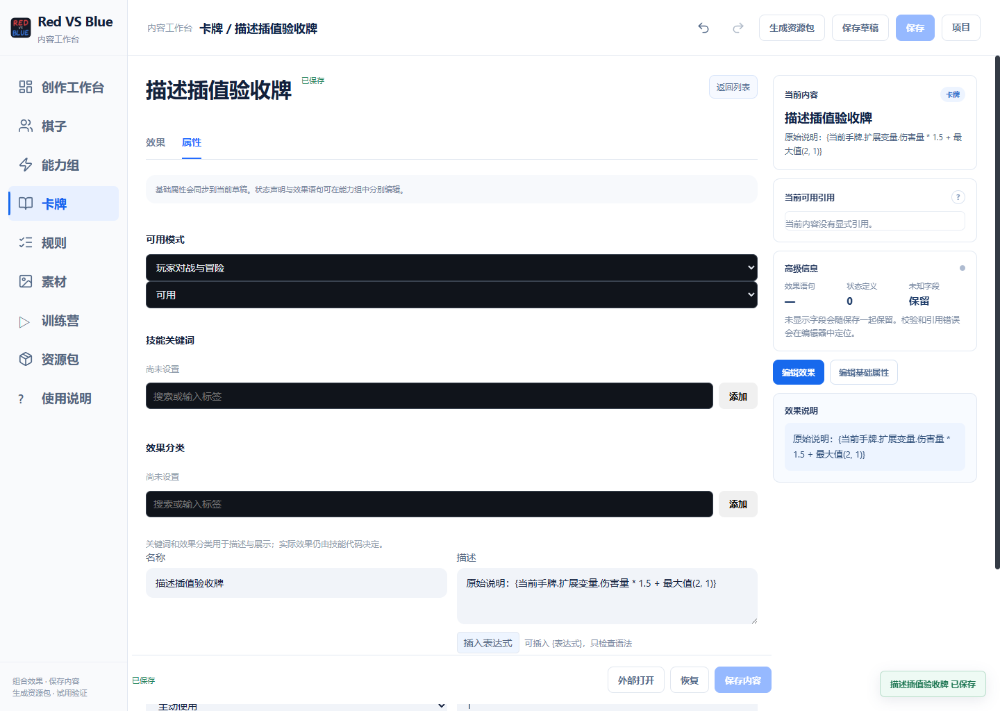
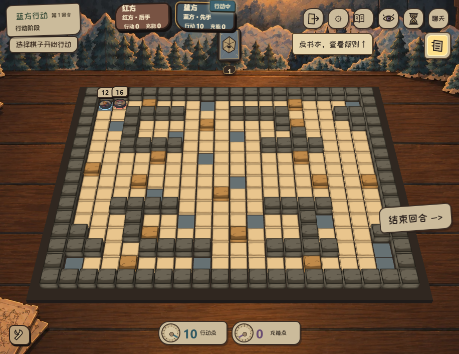

内容工作台 · 作者指南
把一个技能写清楚，再亲手试一次
从新建内容、填写一句效果，到保存草稿、训练营重试和生成资源包。本说明对应编辑器中的中文句子界面。
1. 从哪里开始
在右上角“项目”中创建空白项目，或复制官方内容。空白项目适合练习从零编写；复制官方内容适合修改现有棋子并比较实际效果。项目彼此独立。
| 目录 | 在这里做什么 |
|---|
| 棋子 | 编辑基础属性、初始技能与规则、状态和所属能力组。 |
| 能力组 | 围绕一项能力组织主动技能、被动规则、状态、衍生卡牌与扩展变量。主动技能与能力组不是同一种对象。 |
| 卡牌 | 编辑费用、描述以及使用时执行的效果。 |
| 规则 | 选择触发条件，编写触发后的语句。被动能力通常在这里实现。 |
| 素材 | 导入与选择图片。可见状态应配置图标。 |
| 训练营 | 运行当前有效草稿或已接受版本，重试同一个场景。 |
| 资源包 | 检查已保存内容并生成可安装的资源包。 |
点击“新建”，填写显示名称。内部引用由编辑器保存；重命名显示名称时，不需要手动重写其他内容的引用。
2. 一条语句、一个参数地编辑
对 目标 造成 当前棋子.攻击力 × 1.5 点 普通 伤害，来源为 当前棋子。
“添加语句”按用途分类。先选要做的事情，再点击句子中的蓝色参数；只改这个参数，不必展开整条语句。条件和循环的内部语句可以收起。
- 输入区支持键盘编写复杂表达式，例如
(当前棋子.攻击力 + 2) * 1.5。 - 字段通过点号访问；输入对象后，联想才展开它的字段。中文句号会按字段点号处理。逻辑运算使用
&&、||、!。 - 联想浮层跟随输入位置；Tab 接受当前候选，Esc 关闭浮层。右侧展开栏是较大的编辑空间。
- 参数旁显示要求的类型。引用和函数的返回类型会影响后续候选；提示不是运行时取值。
- 需要复用结果时，点击“保存返回值”，填写变量名。后续语句可引用它；前面尚未产生的值不能提前读取。
变量名可自己命名。类型、内置字段、选项与参数说明由编辑器用中文展示。标签只是视觉分组，表达式仍应能按字符修改。
有返回值的语句保留明显的“保存返回值”按钮。点击后查看返回类型、填写变量名，再选择“新建变量并保存”。它会在当前语句之后新建局部变量，初值就是这次返回值；后续可以读取它，也可以通过赋值语句修改它。类型由返回值推导，不必手填。没有保存时，不会自动产生“目标”变量。
中文输入法选字期间，回车、空格、方向键和退出键由输入法处理；确认选字后才恢复表达式联想。此时按 Tab 可以接受编辑器候选。修改声明的类型与初值时，可以先完成整条语句的填写，再点击“应用”；尚未应用的内容是草稿，不会直接运行。
| 写法 | 含义 |
|---|
当前棋子.攻击力 | 读取当前棋子的攻击力。 |
目标.阵营 != 当前棋子.阵营 | 比较双方阵营。所属玩家和阵营不能混用。 |
{1, 2, 3} | 有顺序的元组；第一项的下标为 1。 |
坐标(1, 0) | 在相对范围中表示偏移；没有参考原点时表示绝对坐标。 |
列表.包含(目标) | 查询容器是否包含某个值；使用当前入口支持的成员联想或等价函数。 |
3. 模板、显示选项和扩展都能逐字段编辑
多字段对象不是一块需要手写的原始文本。打开对象参数后，查看字段名称、类型和说明，逐项填写；列表可新增、删除条目，嵌套对象可继续展开。
| 填写状态 | 意义 |
|---|
| 未填写 | 不声明这个字段。只有接口约定了默认行为时，才使用默认行为。 |
| 数值 0 / 否 | 明确填写一个有效值，不等于未填写。 |
| 空容器 | 明确声明没有条目，例如召唤物的初始技能为空。 |
| 空值 | 明确声明无值；只有允许为空的字段才能使用。 |
棋子模板决定实际生命、移动力、技能与规则。显示选项决定玩家看到的字段，不赋予实际技能或生命。没有填写的显示字段继续使用正常显示。
扩展变量用于存储自己声明的数据。先声明类型、名称和初值，再保存和读取。尽量使用棋子、玩家、技能或规则实例的引用，避免靠字符串拼接寻找对象。
“添加语句”使用统一入口：新建变量、声明扩展变量、赋值。扩展声明中的对象可以填写当前棋子、当前玩家、全局或具体实例；无需分别寻找玩家和棋子专用的声明、读取或写入模块。读取字段写在表达式中，例如 当前玩家.扩展变量.计数。
例如：在“当前玩家”的扩展中新建数值变量“计数”，初值为 0；再添加赋值：当前玩家.扩展变量.计数 = 当前玩家.扩展变量.计数 + 1。映射也是普通变量类型，可用 当前玩家.扩展变量.奖励["额外"] = 2 更新某个键；其他键保留。只读字段会提示不能赋值，棋盘位置变化仍须使用位移语句。
| 结构 | 字段怎么理解 |
|---|
| 棋子模板 | 生命值是当前剩余生命；生命上限是可恢复到的上限。移动力、初始技能、初始状态和初始规则决定召唤物的实际行为。基础副本可提供未覆盖的属性，明确填写的字段覆盖副本中的对应字段。 |
| 显示选项 | 填写希望观察者看到的名称、生命、攻击力、技能等。每项都可单独配置；未填项保持正常显示。可按拥有者、友方、敌方和旁观者分别声明。 |
| 选项映射 | 每项左侧是玩家看到的选项名称，右侧是后续代码使用的值。可以加入任意多个选项，不限于两项。值可以是布尔值，也可以是当前接口允许的其他类型。 |
| 扩展 | 保存该对象需要的数据，例如分身标记、历史位置、计数和实例引用。字段名称由作者决定，读取时仍检查声明的类型。 |
4. 先编写一个伤害技能

选择结果先保存并命名，后面的伤害语句引用该名称。“目标”不是自动指向最近一次选择的内置变量；若要使用这个名称，也须先保存为“目标”。
- 在“能力组”中新建主动能力，填写名称与描述，再设置行动点、充能点、冷却等基础信息。
- 添加目标选择语句，范围填 5，筛选敌方棋子。把选择结果保存为变量，例如
target。 - 添加造成伤害语句，目标填
target，数量填 当前棋子.攻击力 * 1.5，伤害类型选“普通”，来源选“当前棋子”。 - 先用较简单的固定数值验证选择和伤害，再改成表达式，便于区分流程错误和数值错误。
- 保存有效内容，关闭并重新打开，确认目标、表达式和返回变量仍在。点击“试用技能”，在训练营选择目标并核对实际生命变化。
不需要再手写“目标还活着吗”“距离是否合法”等通用补救判断。选择与效果的合法性由引擎处理；业务条件才写在语句里。
5. 影分身：把复杂能力拆成明确的数据与动作
影分身的实际属性、外观和两种释放方式是三个独立问题。编写时先准备数据，再组合动作。

实际操作示例先选落点，再选择释放方式。两步结果都能命名，后面的分支直接引用。
- 准备选项。创建选项映射，显示“原地留下分身并传送”和“向目标位置召唤分身”。选项值可以用布尔值；显示文字不承担内部变体协议。
- 选择地格。选择五格内可行走且未被占用的地格，保存选择结果。
- 保存原位置。在传送前，把当前棋子的位置保存到变量。动作之后再读取，会得到新的位置。
- 复制本体。把当前棋子的实例信息复制为独立副本，供模板和创建时显示使用。
- 声明棋子模板。基础数据取自副本；移动力设为 0；初始技能和状态设为空；规则选择“受伤后消散”的规则；扩展字段记录分身标记。局中召唤默认是非核心棋子。
- 声明显示。为其他观察者逐项设置创建时的本体显示值；所属玩家的显示可另外设置。显示快照不会随着本体后来的数值变化而自动刷新。
- 组合分支。传送分支使用保存的原位置召唤分身；普通召唤分支使用所选地格。使用通用位移与召唤语句，不使用“传送型分身”这样的角色专用模块。
- 在召唤时传入显示。不要先召唤一个明显不同的棋子、下一句才修改外观。创建时即可带上显示选项。
检查“受伤后消散”规则是否已保存并被模板引用。它是规则，不是技能列表中的按钮。传送、召唤和受伤后触发应分别测试。

模板是可逐字段编辑的对象。也可以先把对象保存为“分身模板”，再在召唤的模板参数中点击“输入表达式”，填写这个变量名。
消散规则选择“受到伤害后”，规则体填写“消灭当前棋子”。消灭会正式结算死亡，不需要把生命值改为零，也不需要先检查当前棋子是否仍存活。
试用时分别检查：在目标格出现分身；传送后分身留在旧位置；分身不能普通移动；分身受到伤害后消散；对手看到的是创建时的本体数值。传送被阻止时，本体仍占着原位，引擎会使原位召唤无效，不需要再添加一层占用或成功判断。
6. 被动能力从触发器开始
先选触发条件，再编写规则体。例如“受到伤害后”与“受到伤害前”不是同一个入口：前者读取结算结果，后者可在该事件允许的范围内修改事件。
- 新建规则，选择触发器、监听范围与优先级。
- 用“当前事件”读取目标、来源、伤害等当前入口提供的字段。只有相应入口的字段才有意义。
- 添加条件、赋值或效果；保存规则，关联到棋子或能力组。
- 用另一个技能触发它，查看训练营中的事件结果。仅看到规则在目录里，不代表规则已经部署到棋子身上。
多个动作需要先后执行时，按语句顺序排列；集合遍历用于对每项执行；条件用于真正的玩法分支。循环应有明确的结束条件，不能把引擎的循环上限当作正常业务流程。

从空白创建、保存并重新打开的规则。触发器在“属性”中设置，效果区只写发生什么。
7. 编辑玩家在局内看到的说明与图标
效果语句决定能力做什么，说明与图标决定玩家如何理解它。编辑同一份内容时，把两部分一起检查；修改数值不会自动把自由编写的说明改成相应数值。
| 内容 | 在哪里编辑 | 在哪里看到 |
|---|
| 主动技能 | 进入能力组，选择主动技能，在“属性”中填写名称和描述。 | 局内技能说明；主动技能不要求配置图标。 |
| 玩家级规则 | 进入规则，修改名称和描述，在“玩家规则表现”中开启“局内可见”并选择图标。 | 规则授予玩家后，出现在玩家状态栏，并提供该规则的说明。 |
| 可见状态 | 从使用该状态的能力组进入状态成员，选择图标素材；棋子的初始状态也可在棋子配置中编辑。 | 棋子状态、状态详情及使用图标的棋盘表现。 |
- 先在“素材”中导入所需图片，回到要修改的规则或状态。
- 选择素材并查看实际预览。保存的是素材引用；显示名称改变不会把图片变成另一种状态或规则。
- 保存，再关闭并重开内容，确认描述和所选图片仍在。
- 在训练营让规则实际挂到玩家、或让棋子获得状态，核对局内说明和图标。只配置一个未授予的规则，不会凭空在战局里显示。
- 需要交付时生成资源包，确认内容和图像一并包含。
清除图标后使用既有默认图标；素材不可用时会提示。更换图片不改变触发器、状态强度、持续时间或规则效果。
玩家规则的名称、说明、图标和“局内可见”都属于这条规则本身。新规则默认隐藏，开启后才在局内显示；旧规则保留原有显示行为。隐藏规则仍正常触发和结算，适合后台计数等逻辑。

在规则本身设置表现。此例已保存、重启重开，并打包进入训练场。

真实训练场使用资源包中的图片，说明和图标来自保存的规则与状态。
8. 描述中的动态表达式

点击“插入表达式”，将变量或计算结果放进说明文字；运行时按实际实例显示数值。
棋子、技能、卡牌和规则的“描述”字段下方有“插入表达式”。先把光标放在希望插入的位置，再打开联想框；选择候选或手写表达式，点击“插入到描述”会只插入一段 {表达式}，已有文字不会被重写。
- 联想来自当前内容可见的扩展声明和纯数学函数；外部扩展可以手写。输入框的灰色提示只表示类型或语法，不会读取某个具体棋子或玩家的当前数值。
- 中文输入法选字期间不会提交；组合输入完成后可按 Tab 接受候选。表达式必须先通过语法检查才能插入。
- 运行时会按当前实例和只读快照读取扩展数据。没有实例上下文时显示“未赋值”，不会把缺失值当作 0；布尔结果显示为“是”或“否”。
- 复杂表达式可以保留普通小数，例如
{当前手牌.扩展变量.伤害量 * 1.5}；需要取整时明确使用已支持的纯取整函数。
描述插值只提供只读成员访问和已登记的纯运算，不执行作者函数、随机逻辑或效果语句。修改描述后保存并重新打开内容，确认插入文本仍在，再到训练营用实际实例验证动态数值。
例如填写 造成 {当前手牌.扩展变量.伤害量} 点伤害。，这张牌的伤害量从 3 改为 5 后，说明也显示 5。状态可读取 {当前状态.扩展变量.层数}，玩家规则可读取 {当前规则.扩展变量.计数}。不同同名实例分别读取自己的值；元组第一项写 [1]。缺失值显示“未赋值”，不会补成 0 或阻塞游戏。
9. “保存草稿”和“保存”有不同用途
| 操作 | 保存什么 | 能否进入运行和打包 |
|---|
| 保存草稿 | 未完成语句、尚未应用的输入和编辑状态，保存在项目独立草稿区。 | 不能。最后有效内容保持原样。 |
| 保存 | 通过语句与类型校验的内容定义。 | 可以继续做训练与资源包检查。 |
| 应用参数 | 将当前参数输入写入编辑中的语句。 | 不等于保存整个文档，也不等于应用到当前战局。 |
| 应用并重试 | 验证当前草稿，建立新的训练快照。 | 只重建训练战局，不覆盖正在进行的正式对局。 |
看到“草稿已保存 · 尚未应用”，表示编辑内容被保护，但正式内容尚未更新。重新打开同一项目可继续编辑。若文件被其他进程修改，编辑器应提示冲突，不能静默覆盖。
10. 在内嵌训练营调试
训练营实际控件。先运行一次，再修改草稿并点击“应用并重试”。
- 完成并应用正在填写的参数，在技能中点击“试用技能”，或进入“训练营”打开当前草稿。
- 选择初始行动方和场景，布置棋子并准备资源。开始正式操作前的场景调整会成为重试的初始场景。
- 运行一次技能，检查选择过程、生命和位置变化、资源与冷却、日志及状态。
- 返回编辑器修改参数，再进入训练营点击“应用并重试”。新战局使用新的有效草稿，沿用原场景和随机种子；上次结果可以比较。
- 若草稿有错误，先修正并应用输入。不能把未应用的半句表达式当作当前代码运行。
状态栏显示内容版本、随机种子、动作数量与状态指纹。相同种子保证可比较的随机过程；修改规则后，结果可能按新规则变化。

实际训练棋盘。这里使用正式规则引擎；编辑器侧边记录动作、状态变化和重试结果。
第一次技能或移动操作后的临时调试调整只属于本次试玩，不回填到初始场景。要换一个测试场景，请关闭试玩并重新布置。切换目录时训练窗口会隐藏；回到训练营继续查看。
11. 生成资源包
- 保存所有准备交付的有效内容；未完成草稿不会自动混入包内。
- 进入“资源包”，刷新当前项目，执行内容检查。
- 首次或一般内容更新选择完整资源包；只有明确有对应基础包时才选择增量更新。
- 生成后查看检查结果，再使用实际生成的包试玩。打包成功不等于所有技能都已逐项通过玩法验收。
12. 出问题时按这几步检查
| 现象 | 先检查 |
|---|
| 不能保存 | 是否有尚未应用的参数？目标、必填对象字段和返回值类型是否完整？可以先保存草稿。 |
| 找不到变量 | 是否在前面的语句保存了结果？是否越过了分支或循环的作用范围？ |
| 模板没有技能 | 显示技能和实际技能是不同字段；显示技能不会自动安装实际技能。 |
| 被动没有触发 | 规则是否已关联、部署？触发器与事件前后是否一致？条件是否满足？ |
| 召唤或位移没发生 | 检查实际落点和日志中的失效原因，不要先在作者代码外加一堆兜底。 |
| 改动后试玩仍像旧版 | 确认参数已应用、草稿可运行，再点击“应用并重试”，检查版本是否改变。 |
运行时失效的语句应被记录并跳过，不能无限等待；作者界面的输入与类型错误仍应尽早指出。遇到问题请保留技能、初始场景、种子、操作步骤和错误截图。
显示选项保证所声明字段的显示行为。原始通信数据中的实例标识并不因此成为匿名标识；这份指南不将视觉伪装等同于通信层的秘密身份保护。